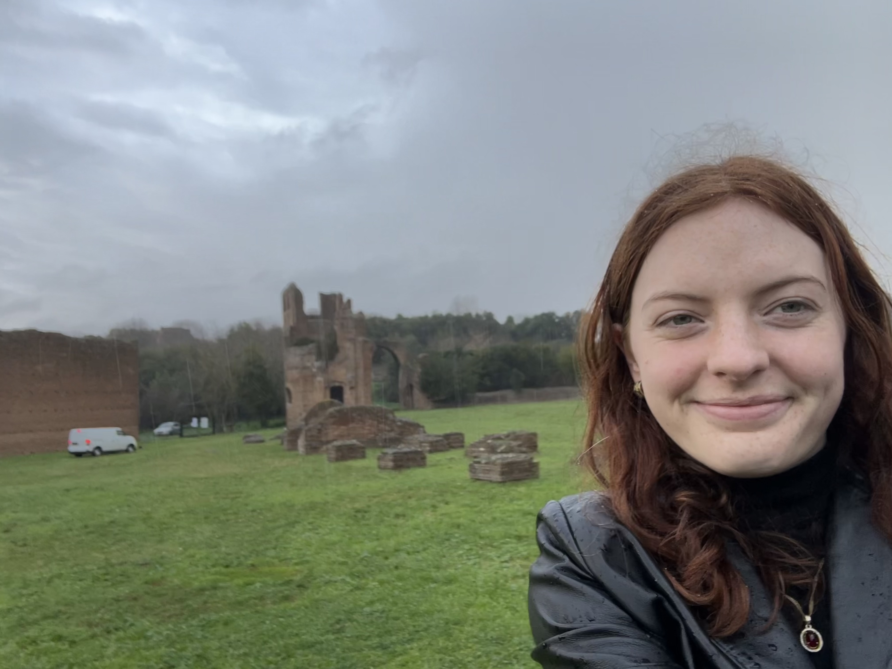
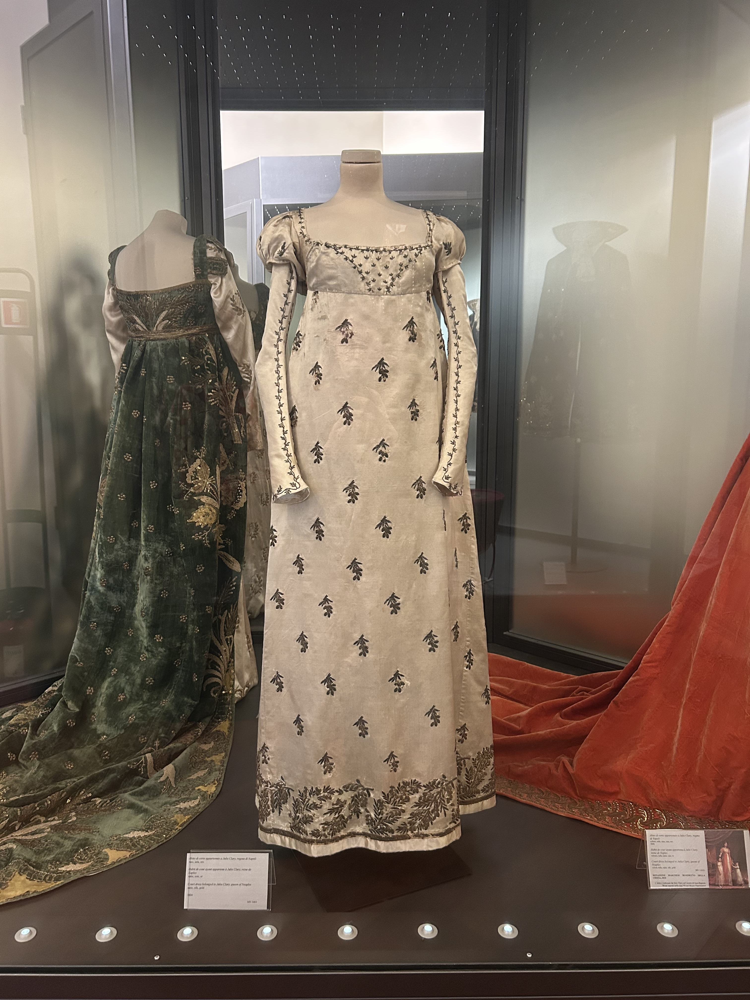

Started my day going to Villa di Massenzio which was a bit of a haul. Took a bus that about 30 minutes southeast. One lady got off on this stop and went my direction and I realized she was opening the museum because I had gotten there right at opening (10am) LOL. Saw the Mausoleum some guy built for his son and there was a chariot racing zone. Fun area as well, this was off the Appian Way.
I was going to go to Museo di Mura but the bus took 40 minutes and I decided to just take the bus home. I also realized Museo di Mura is "Museum of Walls" and is just about how the Romans built walls. Went shopping at Zara and Mango! Shopped for like two hours, but didn't buy anything. Then I went to the Napoleon Museum that was about Napoleon and his family. There was lots of info in English so I feel like I learned a lot about them! I also liked the dresses because they reminded me of Bridgerton.
